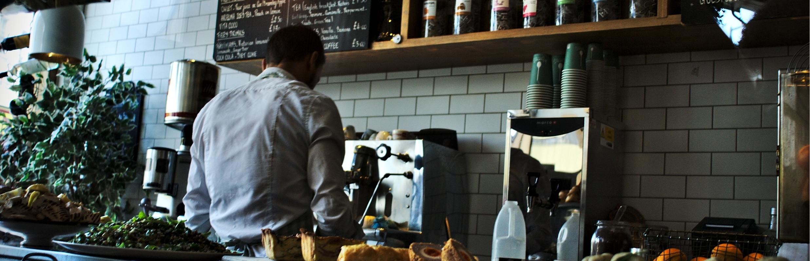

<div id="single-portfolio">
	<div id="portfolio-details" class="container">
		<a class="close-folio-item" href="#"><i class="fa fa-times"></i></a>
		
		<div class="row">
			<div class="col-sm-9">
				<div class="project-info">
					<h3>Tea Time Just Got Better</h3>
					<p>The owners of the English Parlor, a tea room and bakery, came to us after having a bad experience with another company. All they wanted was a simple site that would allow them to have a web presence and they didn’t want to be sold on something  more than a simple site. “No BS, can you create a minimal site for us?” They asked.</p>
					<p>“Yes!” We replied. We talked with the owners in depth about their vision for the site, and we designed their brand identity, the layout, and basic content for the site. We conducted research ahead of time to ensure the site was competitive and used user stories to ensure it met their customer's goals as well.</p>
                    <p>Overall, the owners were exceedingly pleased with the results. Many converted from visiting their website to visiting their shop.</p>
				</div>
			</div>
			<div class="col-sm-3">
				<div class="project-details">
					<h3>Project Details</h3>
					<p><span>Client: </span>English Parlor</p>
					<p><span>Date:</span> 15 Oct 2016</p>
					<p><span>Tag:</span> User Research, Branding, Site Development</p>
				</div>  
			</div>
		</div>
	</div>
</div>